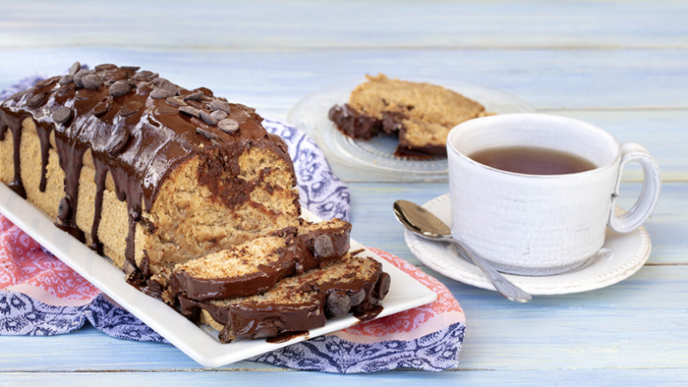
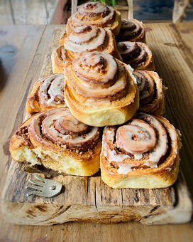
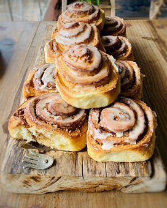

Galletas con Copos de Chocolate
Ingredientes
2 tazas de harina multiusos
1 cucharadita de polvo para hornear
1 cucharadita de bicarbonato de sodio
1/4 cucharadita de sal
1 taza de mantequilla derretida
1 taza de Splenda mezcla de azúcar morena
2 huevos grandes
Extracto de vainilla a 1 cucharadas
2 tazas de chispas de chocolate con Semisweet
Instrucciones
Precaliente el horno a 375 ° f.
Hojas para hornear con papel de pergamino. En un tazón, combine la harina, el polvo para hornear, el
bicarbonato de sodio y la sal.
En un recipiente para mezclar, mezcla mantequilla y Splenda mezcla de azúcar morena.
Mezcla los huevos de a uno por vez. Agregue el extracto de vainilla.
Mezclar en mezcla de harina, luego doblar en virutas de chocolate.
Suelta la masa con cucharitas redondas en las hojas para hornear.
Hornea durante 11-13 minutos. Permitir que las galletas se enfríen un poco
antes de transferir a los bastidores de alambre para enfriar por completo.
Crema de chocolate y caramelo
Ingredientes
50 gr de chocolate
400 ml de nata
80 gr de crema de caramelo
Instrucciones
Para comenzar pondremos un cazo al fuego al que le añadiremos los 400 ml de nata,
ésta la calentaremos hasta que comience a hervir. Cogemos la tableta de chocolate y la troceamos en un bol,
después a fuego lento, lo calentamos sin que se queme, sólo hasta que se funda.
También podemos utilizar el microondas unos pocos segundos, comprobando que el chocolate se ha fundido.
Añadimos al chocolante fundido la nata que previamente habíamos calentado,
también incorporaremos los 80 gr de crema de caramelo y removemos hasta que la mezcla quede bien ligada.
Ya sólo nos queda repartir la mezcla en vasitos individuales y
dejarlos reposar en la nevera para que se enfríe. Una vez frío sólo nos queda servirlo y si os gusta,
le podéis poner un poco de nata montada por encima.
Queque vegano
Ingredientes
200 gramos de Harina Integral
200 gramos de harina blanca
250 gramos de Azúcar Flor o impalpable
1 cucharadita con polvos de hornear
1 cucharadita de bicarbonato
1 cucharadita de Esencia de Vainilla
100 ml de aceite de oliva o canola
1 cucharada de vinagre de manzana o de vino blanco
280 ml de agua con gas o soda
180 ml de leche de soya o almendra
Papel mantequilla para base del molde
Cobertura:
1 cucharada de Mantequilla de Maní Great Value
2 cucharadas de chocolate en polvo amargo
½ taza de chocolate bitter 100% cacao
1 cucharada de aceite de coco
Decoración:
2 cucharadas de chips de chocolate bitter
Instrucciones
Precalentar el horno a 180 grados celsius.
Cernir todos los ingredientes secos: Harinas, polvos de hornear y bicarbonato.
En otra fuente, unir el aceite de oliva, vinagre, leche de almendar o soya, soda y vainilla.
Con una batidora mezclar todo y añadir en el molde de 20 cm, previamente aceitado, y llevar al horno por 40
minutos.
Pinchar el queque con un palito. Si sale seco, está listo. Si por el contrario no, aún le falta tiempo de
horneado.
Para La Cobertura:
Calentar agua en una olla pequeña, apagar y poner encima una fuente que no toque el agua.
Adentro de la fuente, agregar el chocolate bitter picado, aceite de coco y el chocolate en polvo, mezclar
hasta que esté todo unido y luego sacar de encima de la olla.
Mezclar con la mantequilla de maní y poner encima del queque.
Decorar con chips de chocolate.


 
